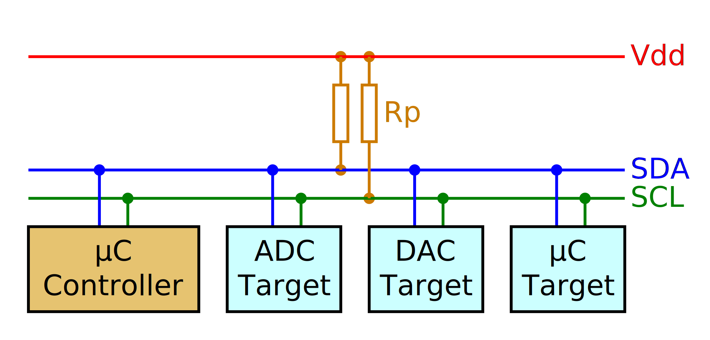

I2C
We just saw the UART serial communication format. UART serial is widely used because it is simple and has been around almost forever. (Remember how the host device is called a "tty" for "TeleTYpe"? Yeah, that.) This ubiquity and simplicity makes it a popular choice for simple communications.
Because of hardware limitations on line length vs signal quality and because of difficulty of accurate decoding, UART serial typically caps out at about 115200 baud under ideal conditions. A UART serial port has both low bandwidth (11.5KB/s) and high latency (87µs/byte).
UART serial is point-to-point: there is no way to connect three or more devices to the same wire, and each wire requires a dedicated hardware device on each end.
The good news (and the bad news) is that there are plenty of other hardware-assisted serial communication protocols in the embedded space that overcome these limitations. Some of them are widely used in digital sensors.
The micro:bit board we are using has two motion sensors in it: an accelerometer and a magnetometer. Both of these sensors are packaged into a single component and can be accessed via an I2C bus.
I2C is pronounced "EYE-SQUARED-CEE" and stands for Inter-Integrated Circuit. I2C is a synchronous serial bus communication protocol: it uses two lines to exchange data: a data line (SDA) and a clock line (SCL). The clock line is used to synchronize the communication. Synchronous serial can run faster and more reliably than async serial. I2C devices have bus addresses: the hardware implementation allows sending bytes to a particular device, with other devices connected to the same wires ignoring this communication.

I2C uses a controller/target model: the controller is the device that starts and drives the communication with a target device. Several devices can be connected to the same bus at the same time, and can choose to act either as a controller or as a target. A controller device can communicate with a specific target device by first broadcasting the target address to the bus. This address can be 7 bits or 10 bits long. Once a controller has started a communication with a target, no device is other than the controller and target is allowed to transmit on the bus until the controller ends the communication.
NOTE "Controller/target" was formerly referred to as "master/slave". You may still see that in literature or as labeling on boards. This terminology is now deprecated both in official standards and newer documents, but is used in the Nordic manual for our nRF52833 part and in some embedded Rust documentation.
The clock line determines how fast data can be exchanged. The MB2 I2C interface can operate at speeds of 100, 250 or 400 Kbps. With other devices even faster modes are possible.